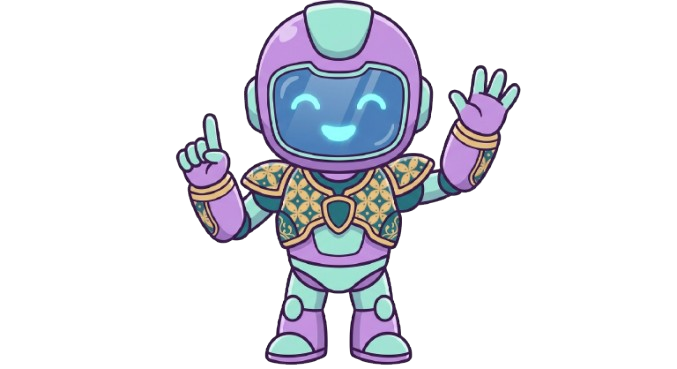

Cara A: Dokumentasi Biasa
Kamu dokumentasikan dengan cara biasa. Foto dari berbagai sudut, ukur fisik batu, catat semua detail. Hasilnya akurat dan detail. Tapi butuh waktu lama, satu hari.
Gunakan mode Situs Desktop agar dimensi penjelajahan pas dan tidak terpotong! (Klik titik 3 di pojok kanan atas browser).


